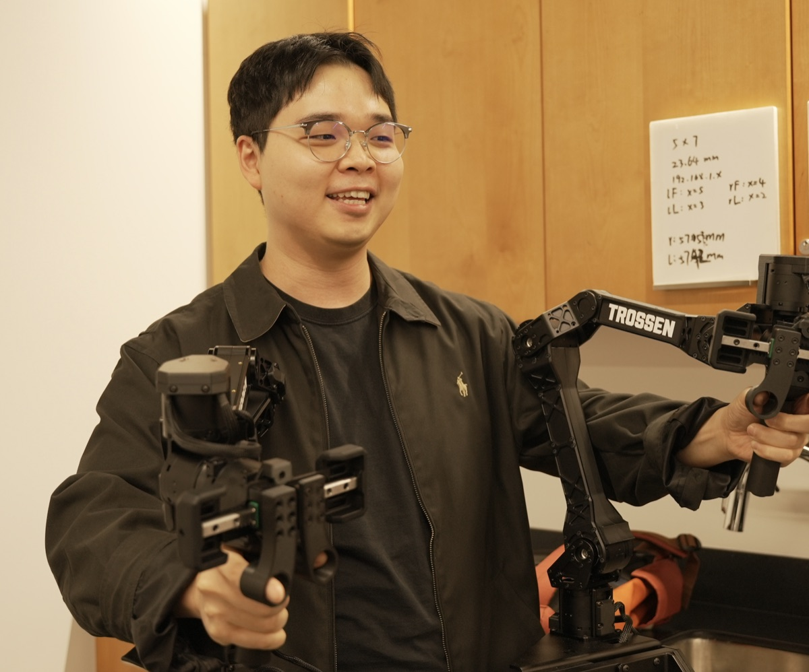
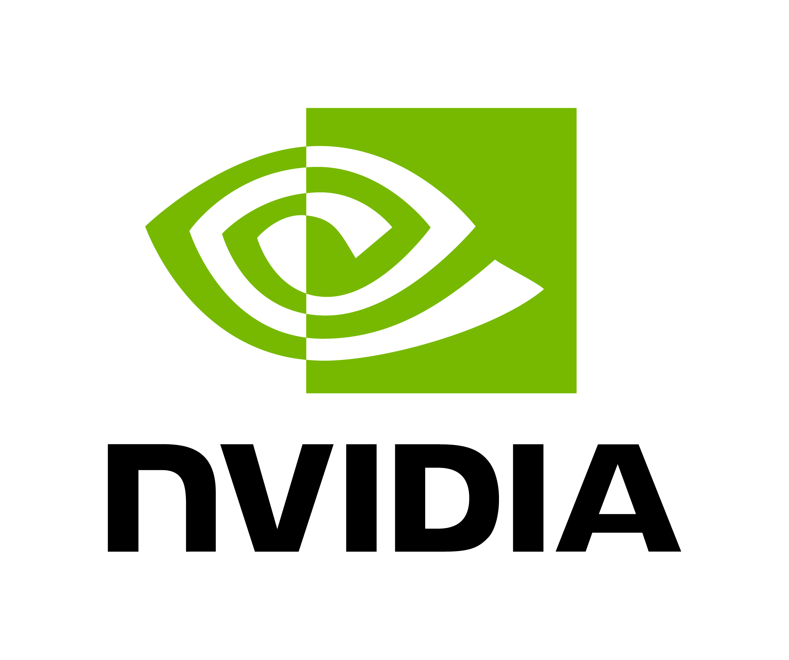
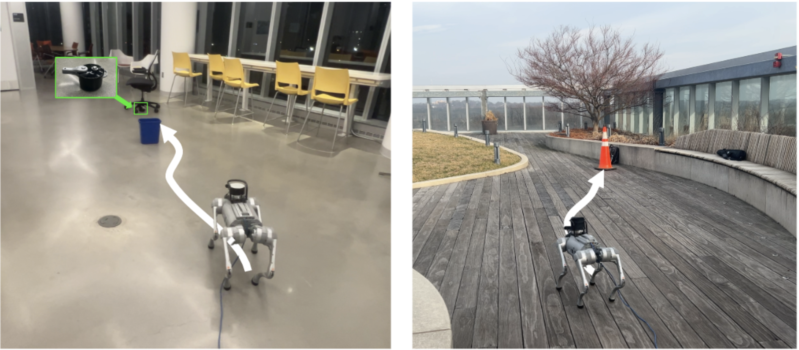
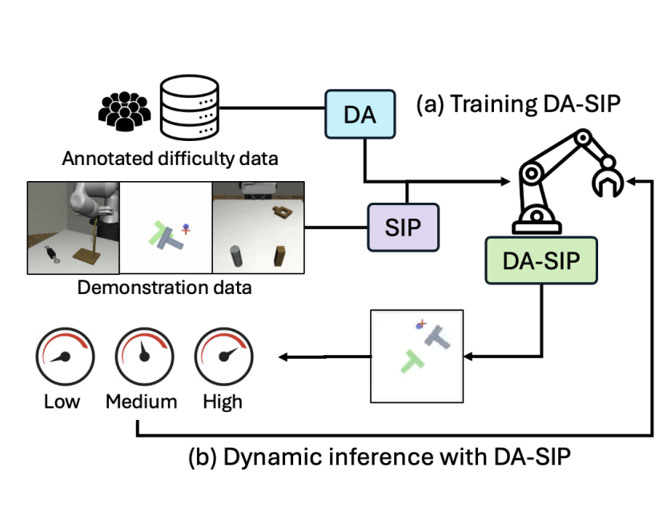
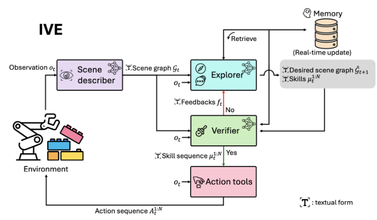
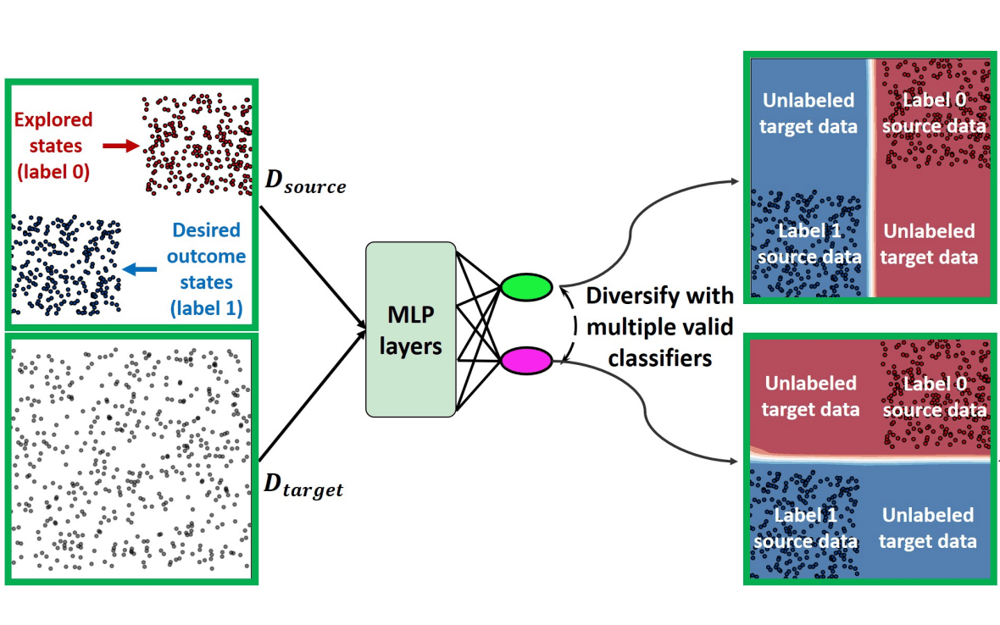
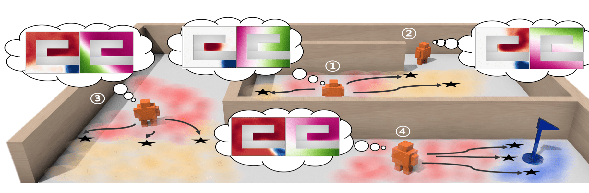
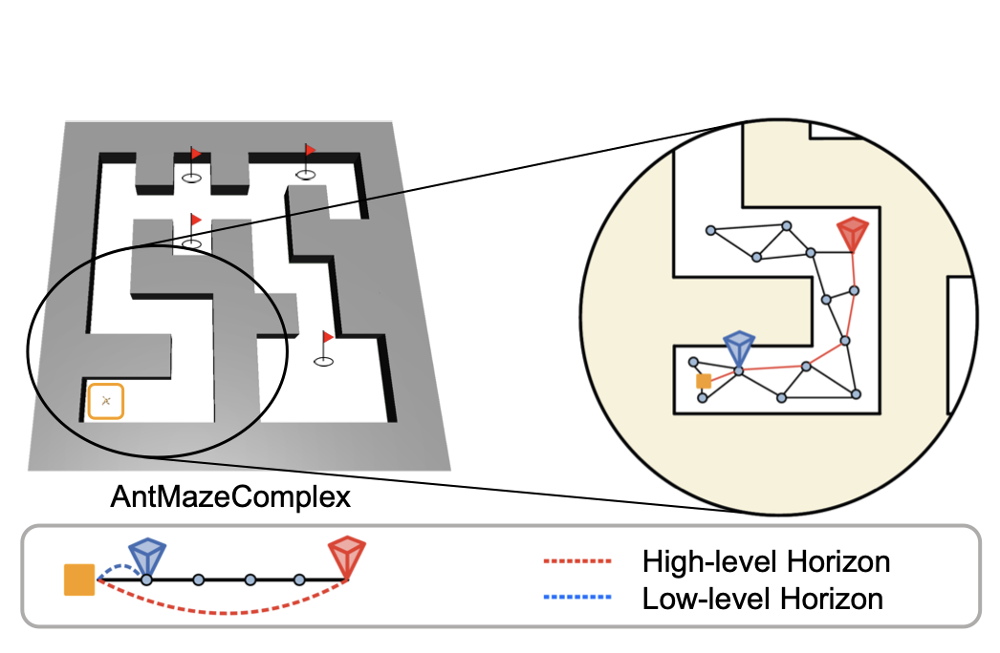
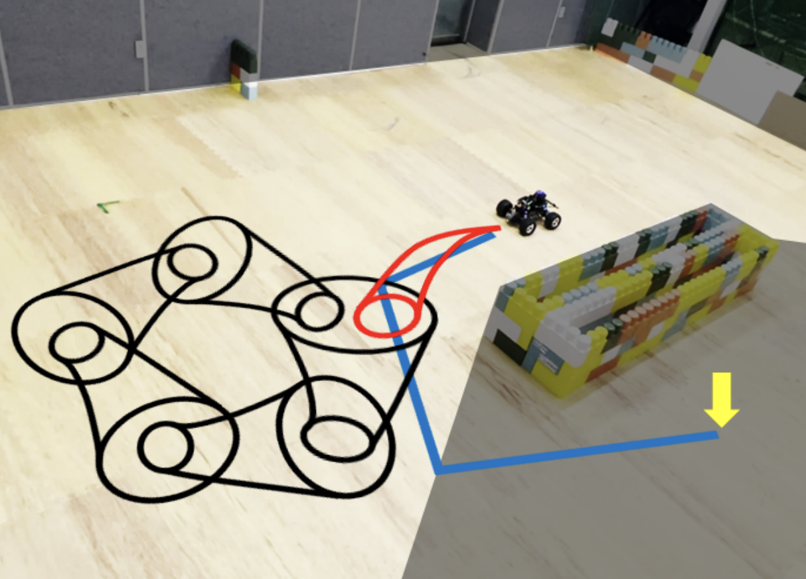

이승재
I am a Ph.D. student in the Department of Computer Science at UMD, where I am fortunate to be co-advised by Dr. Furong Huang and Dr. Jia-Bin Huang. I am also a Research Intern at NVIDIA GEAR Lab, where I have the pleasure of working with Dr. Jim Fan, Dr. Danfei Xu, and Dr. Ruijie Zheng.
Prior to joining UMD, I earned my Master's degree in the Department of Aerospace Engineering at SNU, where I was fortunate to be advised by Dr. H. Jin Kim. I also had the wonderful opportunity to work on robot learning with Dr. Lerrel Pinto of NYU.
Before that, I received Bachelor's degrees in Mechanical and Aerospace Engineering at SNU.

Advised by Professor Furong Huang and Professor Jia-Bin Huang.
Aug 2024 - Present | College Park, MD
Advised by Professor H. Jin Kim.
Mar 2021 - Feb 2024 | Seoul, Korea
Mar 2015 - Feb 2021 | Seoul, Korea

GEAR Team Research Intern
May 2026 - | Santa Clara, CA
Large Behavior Model Team Research Intern
May 2025 - Aug 2025 | Cambridge, MA
Research collaborator (Remote), advised by Professor Lerrel Pinto.
Jul 2023 - Jun 2024 | Seoul, Korea (Remote)
Deep Learning Algorithm Team Intern
Jul 2020 - Sep 2020 | Gyunggi-do, Korea
Projects I led or co-led
My research aims to scale robot learning beyond expensive robot data: drawing on human videos and vision-language models, and making perception and action generation more efficient.
Preprint2026
Preprint2026
Preprint2026
Preprint2026
NeurIPS2026
CoRL2026
CoRL2026
IROS2026

CVPR2026
ICLR2026 🏆 Oral
NeurIPS2025

CoRL2025

ICLRw2025
ICRA2025
ICML2024 🏆 Spotlight, Top 3.5%
NeurIPS2023
NeurIPS2023

ICML2023
ICLR2023 🏆 Spotlight, Top 5.65%

IJCAS2023
NeurIPS2022 🏆 Oral, Top 1.76%

IROS2021
